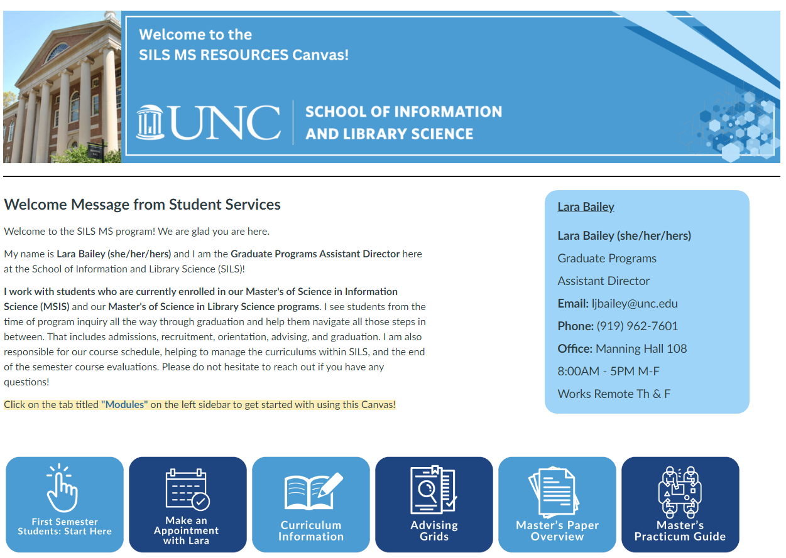
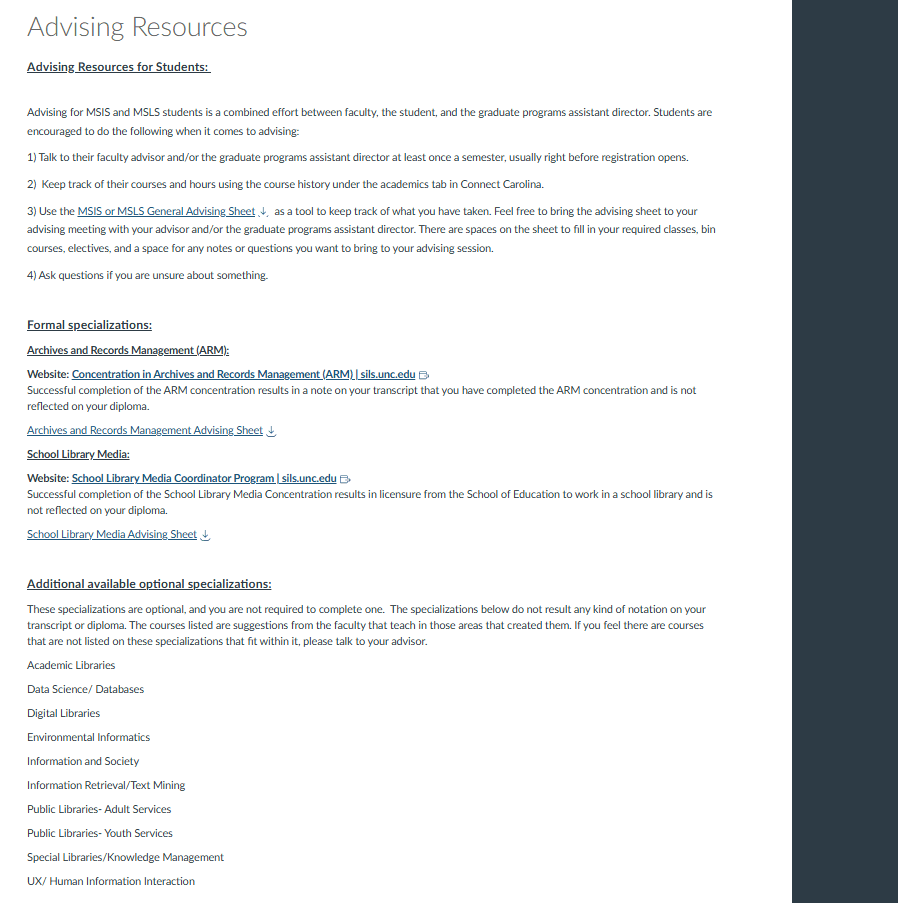
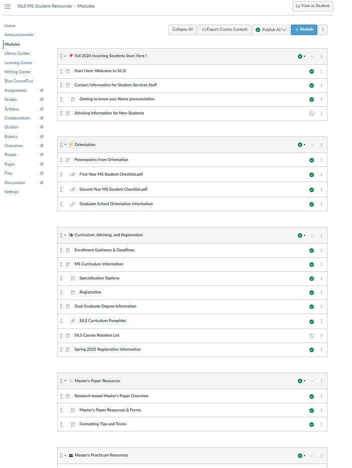
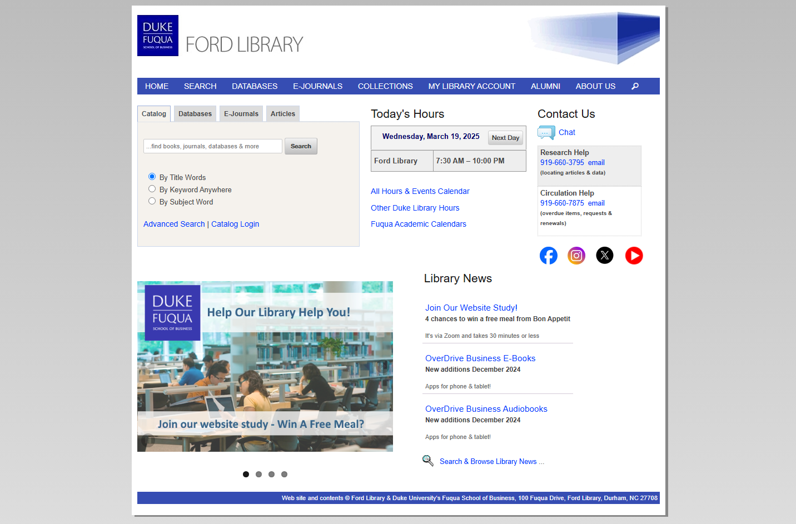

Preface
This is a usability test on the site Typeform.
Typeform is a free, online platform that allows users to create and distribute various custom form types using their form creation tools. Typeform is known for its aesthetically pleasing forms and user-friendly interface.

Why Test Typeform?
Typeform was selected due to its minimalist interface for form creation. The goal was to analyze whether functionality was sacrificed for the sake of a sleek design.
Evaluation Goals
Purpose: Measure how easily a new user can create and publish a survey on Typeform without prior experience.
- Analyze Learnability: Measure the time it takes a new user to create a thorough survey form with various query types.
- Performance: Identify actions that cause difficulty or confusion for users.
- Satisfaction: Evaluate user enjoyment and satisfaction with the system.

Methodology
- Heuristic Evaluation: Conducted using Nielsen Norman's 10 Usability Heuristics.
- Usability Testing: Participants completed 8 tasks while engaging in think-aloud activities.
Analysis
Both quantitative and qualitative analysis were performed to identify key findings.

User success rates indicate which parts of the Typeform platform were difficult for users. Tasks involving branching logic, accessibility, and QR codes had lower success rates.

Tasks with low intuitiveness scores, such as image manipulation and branching logic, indicate areas for improvement.

Tasks with large time gaps between expert and new users suggest features that are harder to learn.
Specific Notable Issues
- Participants struggled with the "other" option in settings and the preview feature.
- The matrix icon was difficult to identify due to unclear labeling.
- Branching logic and accessibility menus were challenging to navigate.
Recommendations
1. Add Descriptions for Labels


Adding descriptions to labels can clarify the purpose of each feature.
2. Visible Help for Complex Interfaces

A help button on complex screens can improve user understanding.
3. Enlarge Feature Icons and Add Labels


Enlarging icons and adding labels can make features easier to locate and identify.

UNC SILS Resource Site Overhaul
The UNC SILS (School of Information and Library Science) resource site is a critical tool for students, providing access to essential information about courses, graduation requirements, advising, career resources, department resources, and more. However, the previous site was extremely disorganized and difficult to navigate, often feeling like a scavenger hunt to find the necessary information. This project aimed to overhaul the site to make it more user-friendly, visually appealing, and accessible for all students.
Example Original Photos


Why This Project Matters
The resource site is vital for SILS students, as it contains information about:
- Course registration and course bins
- Graduation requirements
- Advising and curriculum information
- Career resources
- Master's exam, thesis, and practicum needs
- Department resources and policies
With over 40 pages of content, the site was overwhelming and poorly organized, making it difficult for students to find what they needed. This overhaul aimed to streamline the site and improve the user experience for all SILS students.
User Research
To understand the pain points and needs of students, I conducted user research by gathering feedback from SILS students via a listserv and Qualtrics survey. Key findings included:
- Students primarily used the site to find course bins, thesis/practicum information, advising, and curriculum information.
- Many students found the site difficult to navigate and described it as "disorganized" and "confusing."
- Students wanted a more visually appealing and intuitive layout.

Information Hierarchy and Consolidation
I began by analyzing all 40+ pages of the site and identifying the information hierarchy. My goal was to consolidate the pages into a more manageable structure while ensuring that all critical information was retained. I grouped related pages together and reorganized the content into:
- 8 Page Groups: These groups included categories like Academics, Advising, Career Resources, and Graduation.
- 23 Pages: Each group contained a set of pages with clear, concise, and well-organized information.
Additionally, I re-labelled many pages to be more descriptive, and I added emojis to the start of each module group to help users with recognition rather than recall

Visual Redesign
Using the UNC SILS style guide, I redesigned the pages to make them more visually digestible. Key design changes included:
- Variable Font Sizes: Used to emphasize important information and improve readability.
- Content Organization: Structured content into sections with clear headings and subheadings.
- Visual Elements: Added graphics, icons, and banners to make the site more engaging.
The homepage was redesigned to include:
- Action Buttons: Shortcuts to the most visited sections of the site, such as Course Bins, Advising, and Graduation Requirements.
- Welcome Message: A friendly introduction to help new students get started.
- Get Started Page: A dedicated page with tips and guidance for navigating the site.
Graphics and Branding
I created custom graphics and banners for the homepage and individual pages to enhance the visual appeal of the site. These graphics were designed to align with the UNC SILS branding and style guide.
Stakeholder Collaboration
Throughout the project, I worked closely with various stakeholders to ensure the site met the needs of all users. This included:
- Student Services: To ensure the site addressed student needs and concerns.
- Career Center: To integrate career resources effectively.
- BSIS, MSIS, and PhD Directors: To tailor the site for undergraduate, master's, and doctoral students.
- Web Accessibility Coordinator: To ensure the site was accessible to all users, including those with disabilities.
Outcome
The overhaul resulted in a more organized, visually appealing, and user-friendly resource site. Key improvements included:
- Reduced the number of pages from 40+ to 23, grouped into 8 categories.
- Improved navigation with clear shortcuts and a redesigned homepage.
- Enhanced accessibility and readability through better content organization and visual design.
- Positive feedback from students and stakeholders, who found the new site much easier to use.

Duke Fuqua Library Usability Test - IN PROGRESS!
This usability test evaluated the Duke Fuqua Library website to identify pain points and improve user experience for students and researchers.
Key Features:
- Conducted heuristic evaluation and usability testing.
- Identified issues with navigation and search functionality.
- Provided recommendations for improving accessibility.